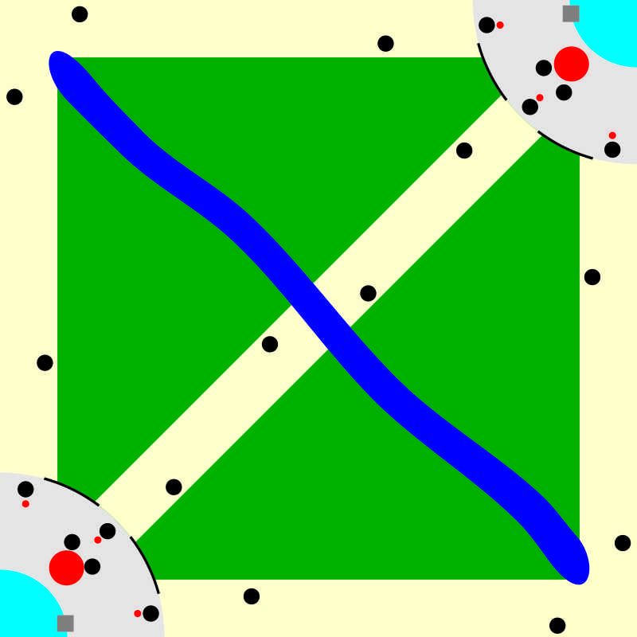
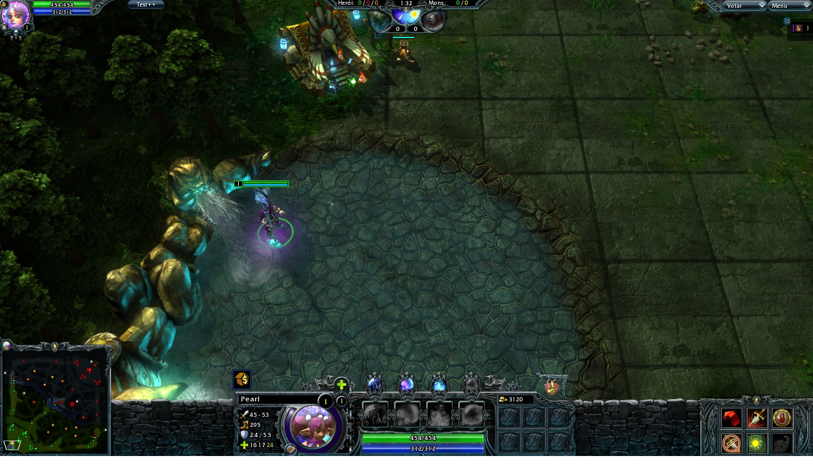
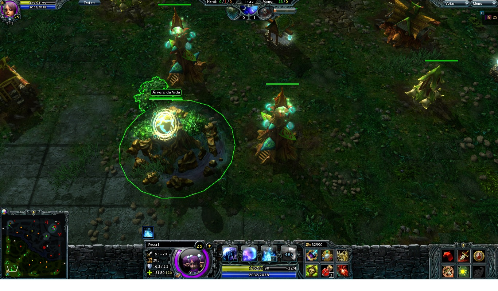
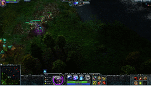

O Mapa(){
Games

Mapa MOBA
Início
O local onde você aparece no início da partida é chamado de fonte. Ela é situada na sua base (região em cinza no minimapa). Ela é composta de algumas construções importantes, como por exemplo, a loja.
A loja
A loja (quadradinho cinza no minimapa) oferece diferentes tipos de equipamentos e consumíveis (poções, por exemplo) para aumentar os atributos individuais de cada personagem. Os itens comprados nela são essenciais para um personagem forte. Você também tem a limitação de números de itens que podem ser comprados, uma vez que seu inventário (algo como a sua mochila) possui capacidade fixa de itens (geralmente 6 itens).
Fonte de respawn

Fonte no HoN
Os jogos MOBA contam com um diferente sistema de “morte”: você sempre reviverá, até que a partida acabe. A fonte (área azul-claro do minimapa) é o lugar onde você aparece no início do jogo e toda vez que você renascer. Ela tem o poder de curar os aliados próximos e atacar inimigos invasores.
respawn do inglês - reaparecer
Lanes
São as estradas (em amarelo no minimapa) que ligam sua base com a base inimiga. Existem 3 lanes no mapa, a top lane (que liga as duas bases pela parte superior do mapa), mid lane (que liga pelo centro do mapa) e bot lane (que liga pela parte parte inferior do mapa) e divididos nessas lanes, o time tentará avançar para o território inimigo. Mas esta não é a única forma de se chegar no território inimigo, pois existem estradas 'alternativas' e outras entradas/saidas espalhadas pelo mapas.
Construção principal

Exemplo de construção principal
É o principal monumento do jogo (círculo vermelho no minimapa) e o símbolo de poder de cada equipe. A equipe que destruir o da equipe adversária ganha a partida.
Torres de defesa
Elas estão distribuídas ao redor da construção principal (bolinhas pretas no minimapa) com o objetivo de defendê-la de invasores. Também estão distribuídas nas lanes para ajudar a impedir o avanço de tropas e personagens inimigos. Tem alto poder ofensivo, mas um alcance de ataque limitado.
Tropas
Tropas são soldados que são enviados automaticamente de sua base para tentar derrubar as torres inimigas. São enviados pelas lanes e entram em combate com qualquer tropa, personagem ou torre inimiga, assim que avistado. Existem também as tropas neutras, que ficam espalhadas em grupos pelo mapa, elas se situam nas regiões do mapa chamadas de selvas.
Selvas
Fora as regiões principais citadas acima, existem outros caminhos pelo mapa, utilizados para fuga e emboscadas, como a região de selva (área em verde no minimapa). Na região de selva encontram-se as tropas neutras e caminhos alternativos. Existe também um rio que divide o mapa em duas metades iguais, ou seja, ele é o limite da região de cada time.
Fog of War

Demonstração de Fog of War (gif criado em Picasion)
Fog of War (névoa da guerra) é um mecanismo de limitação de visão. O mapa (e também o minimapa) fica cinza nas regiões onde não se possui visão do local. Nas regiões de selva, ela é bem evidente, uma vez que o caminho é tortuoso e tem objetos que obstruem a visão (como árvores, por exemplo). Porém, a visão é compartilhada em time, ou seja, você terá visão de toda a área do mapa em que seu time tenha visão, mesmo que esteja longe de você. Utilizar deste mecanismo de ficar fora de alcance da visão ou escondido atrás de uma árvore, por exemplo, é a chave de uma emboscada bem sucedida.
}